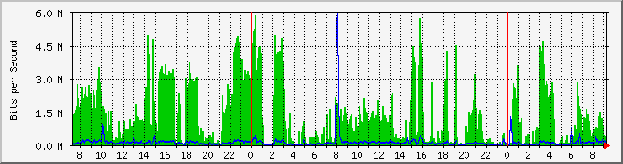
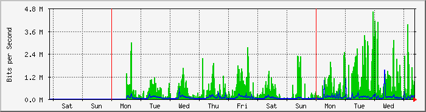
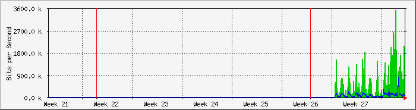
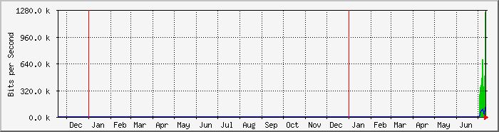

MikroTik RB3011UiAS Interfaz WAN2 (ether2) (ISP EPEC) - LUSA Cordoba
| Equipo: | MikroTik RB3011UiAS |
| Mantenido por: | redes@ersaurbano.com |
| Descripcion: | ether2 |
| Tipo de Puerta: | ethernetCsmacd (6) |
| Nombre de Puerta: | ether2 |
| Max Speed: | 12.5 MBytes/s |
| Ip: | 190.96.112.10 (host10-112.epectelco.com.ar) |
The statistics were last updated Thursday, 14 July 2022 at 9:16,
at which time 'MK-Lusa-CBA' had been up for 43 days, 16:38:32.
`Daily' Graph (5 Minute Average)

|
Max |
Average |
Current |
| In |
5855.7 kb/s (5.9%) |
1277.7 kb/s (1.3%) |
430.9 kb/s (0.4%) |
| Out |
5955.2 kb/s (6.0%) |
126.3 kb/s (0.1%) |
216.3 kb/s (0.2%) |
`Weekly' Graph (30 Minute Average)

|
Max |
Average |
Current |
| In |
4611.3 kb/s (4.6%) |
644.2 kb/s (0.6%) |
928.1 kb/s (0.9%) |
| Out |
1531.8 kb/s (1.5%) |
83.6 kb/s (0.1%) |
125.3 kb/s (0.1%) |
`Monthly' Graph (2 Hour Average)

|
Max |
Average |
Current |
| In |
3507.6 kb/s (3.5%) |
639.8 kb/s (0.6%) |
661.9 kb/s (0.7%) |
| Out |
815.4 kb/s (0.8%) |
82.9 kb/s (0.1%) |
117.9 kb/s (0.1%) |
`Yearly' Graph (1 Day Average)

|
Max |
Average |
Current |
| In |
1254.1 kb/s (1.3%) |
509.7 kb/s (0.5%) |
1254.1 kb/s (1.3%) |
| Out |
119.2 kb/s (0.1%) |
70.1 kb/s (0.1%) |
119.2 kb/s (0.1%) |
| GREEN ### |
Incoming Traffic in Bits per Second |
| BLUE ### |
Outgoing Traffic in Bits per Second |